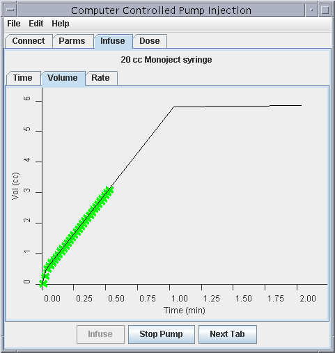
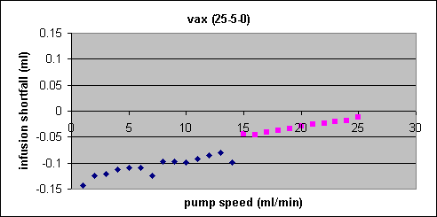

Last Updated: April 24, 2006
Walk Through
Testing
Java
Miscellaneous
Troubleshooting
Type 'pump <profile>' on any GE workstation to start the pump program. <profile> is a short name like nh3 or rac or leucine referencing a particular infusion configuration file. config file details
Alternatively, a save file from a previous session can be reloaded. This might be necessary if the user were to exit the program after a successful infusion but before the actual dose to patient had been calculated. Just replace <profile> with the full path and file name of the appropriate save file which can be found in the $PUMP_DIR/log directory. save file details
The connect screen should appear. The program will attempt to guess which room its working in. Check the 'Room' setting to make sure it guessed right. The terminal servers generally have two pump lines but only the first line is generally used. The program defaults to pump line 1. Press the 'Test Pump' button to test the computer's connection to the harvard pump. It will ping the terminal server connected to the pump. It will attempt to establish a connection. It will send some queries down the line and check the responses. It will make sure the pump is set to work with the correct protocol. Pump setup. Finally, it will order the pump to start infusing at 15 ml/min for 30 seconds. If any of these steps fail, an error message will pop-up on the screen with a detailed explanation of the problem and some suggestions on what to do about it. The last step, turning the pump, can't really be verified by the computer. The user will have confirm for himself that the pump in the room is the pump the program has started running. The pump is told to infuse for 30 seconds but it may not take that long to confirm things. The user can stop the pump early by pressing the 'Stop Pump' button. If everything worked, the 'Parms' tab will become enabled and the user can move on to the next step by clicking on the 'Parms' tab or by pressing the 'Next Tab' button.
The 'Parms' screen is where the enters all the information specific to this particular infusion such as patient name, desired dose and pre-assay information. All fields are required. Many have valid ranges set in the configuration file. Some have formatting rules. Time fields, for example, won't let the user type anything but numbers and colons in the appropriate places. The validation checks on these fields produce warnings and errors. Warnings are values that are outside the proscribed range but won't stop the infusion. They are denoted by yellow backgrounds in the text field. Errors are values that are outside the proscribed range and will stop the infusion. These fields have red backgrounds. Both warnings and errors will generate pop-up messages as the user moves off them. The 'Infuse' tab becomes enabled only when all the errors have been cleared (i.e. there are no more red fields). Move on to the next step by clicking on the 'Infuse' tab or pressing the 'Next Tab' button.
The 'Infuse' screen is where most of the work happens. Every time its brought up, the program recalculates the infusion profile which is shown along the right side of the screen. calculation details Across the top of the screen, there's a clock that tells the users exactly how much time they have to infuse before the activity in the syringe decays down to the point where they can no longer get the full desired dose. They can still infuse. The patient just won't get the full dose. A progress bar above the clock shows this same information graphically. It will change from green to red as the users run out of time.
When the user hits the 'Infuse' button, the program updates the infusion profile, calculates a residual volume, starts the pump turning and begins monitoring the pump progress. Every second or so, the program queries the pump for total volume infused, current rate and current status. There are three ways to track the pump progress -- time, volume and rate with time being the default. monitor file The progress bars on the 'Time' screen basically represent 'time of flight'. By looking at the timestamp on the pump's response to the progress query, the program knows the pump is say 67 seconds into an infusion. By comparing that to the durations of each infusion phase, the program know exactly how far along in the infusion profile the pump must be and updates the progress bars accordingly. The 'Volume' screen plots the results of the pump volume responses (green x's) against the planned volume (black line). The 'Rate' screen does something similar with the pump rate responses. The user is free to switch between these tabs at will during the infusion.
To abort the infusion, the users can press the 'Stop Pump' button. They can still press the stop button on the pump itself but the program will interpret this as an problem and yell at them.
|  |
|---|
During infusion, the pump program may lose contact with the pump. The serial line to the terminal server or the lan cable from the terminal server to the wall may have come loose. The terminal server itself may be having trouble. The department network in general may be having difficulties. If something like this were to happen the pump program routines monitoring pump status would detect the loss of signal. An error message with an audible alarm would be thrown up on the screen. The message would describe the error and suggest possible courses of action which mostly consists of checking the cable connections and making sure the terminal server is still working.
These type of errors aren't fatal to the infusion. The newly upgraded harvard phd 2000 programmable model pumps are very smart. They are given the parameters for the entire infusion up front. After that, they require no further outside supervision. They can change speeds and stop at the appropriate times all on their own. Still, its nice to monitor the pump's progress and thats what all the alarms are about.
Once the connection has been restored, the progress plots will resume plotting the pumps current volume and rate. If the pump is still on profile (and it should be) then the data points will, after a brief gap, continue to fall on the solid line representing the theoretical infusion profile. An example is shown in the screen shots below. The pump program isn't at the moment smart enough though to realize that this was a harmless error. So it assumes the time progress bars are invalid and denotes this by changing the infusion status to 'Error'.
Another type of error may happen during infusion. Something could happen to the pump itself. Someone could hit the stop button on the front of the pump. The pusher block could become obstructed. The pump itself could suffer some kind of nervous breakdown. These errors are also trapped by the pump monitoring routines as well. Error messages with audible alarms and helpful suggestions are also thrown up on the screen.
These type of errors are more serious. Even if they can be corrected immediately, the infusion is now off profile. The progress charts can give an approximation of just how bad things are. In the example below, the pump was paused for about 20 seconds. It can be seen as a flat line on the volume chart. The rate chart shows the rate falling to zero. In this case, the pump was resumed. The pump added time to the end of the bolus phase to hit the intended volume. In other cases, the pump may die irreparably or the investigator (or the patient) may decide to end the infusion.
So now the question becomes: what was the dose to the patient? The normal calculations assume everything went to plan which is of course no longer true. There is however a spreadsheet, pump_estimate_dose.xls, which can still do the math. Where the normal dose program applies a continuous form of the dosing formulas to the infusion profile, the spreadsheet applies the discrete form of those same formulas on the second by second volume information stored in the log files. There are a couple caveats. The volumes as reported by the pump and as found in the log files aren't quite right. We lie to the pump about the syringe diameters so the pumps estimate of infused volume is off slightly. Also there is the whole issue of where to mark the sample time of each sample bin, begining, end, somewhere in the middle. So the spreadsheet numbers aren't quite correct. Still they will give a good ballpark estimate when nothing else is available.
For good or bad, when the infusion is done, the user can hit the 'Next Tab' button or click on the 'Dose' tab to move on to the next step in the process - calculating dose to the patient. When run as part of a computer controlled infusion, the program will remember what the user entered on the parametes screen and when the user pressed the infusion button and these fields will not be editable. The program will also take into account decay over the duration of the infusion. When run independently, the user will have to enter all this information and decay over the duration of the infusion will not be considered. In any case, the user has to enter the post-assay time, the post-assay activity (in micro-curies) and the residual volume. The 'Calculate' button can be pressed when everything is filled in to calculated the actual dose to the patient. If the results are over the 10% FDA overdose limit, the field turns red. If the results are 5-10% over the desired dose, the field turns yellow. explaining overdoses Pressing 'Print' will send two copies of the dose report to the default printer.
The harvard pumps can report the volume they think they've just infused. The volume the pump should have infused can be calculated given a particular profile. The difference between these two numbers can be used as an indicator of just how well the software is controlling the pump activity.
Ran a series of test runs where the pump was controlled alternately with the old vax program and with a prototype perl program that "programed" the newly upgraded pumps with the entire infusion profile up front. The big difference between these two control mechanisms was that the old vax program controlled all pump activity externally deciding when to change speeds and when to stop on the basis of its own system clock. The perl program basically told the pump infuse so many millilters at such a rate, then infuse this many millilters at this rate, then infuse another so many milliters at this new rate then stop. The pump monitoring its own internal volume counters decided for itself when to switch phases and when to stop. The worst vax results and the corresponding perl results are shown below. In this set of runs, they ran 25ml/sec for 1.5sec then 5ml/sec for 1.5sec then incremented the speed on the third phase from 1 to 25ml/sec on each of 25 runs. By the pumps reckoning, the vax program was off by as much as 0.15 ml. The perl program discrepances were too small to measure on the same scale.
|  | |
|---|
For more details on the testing methodology and for full results from all the control scenarios considered, see Pump Control Testing Details.
At the time of this writing, there were 491 files on the vax that contained detailed information from previous infusion runs. With some wrangling, these files were used as the basis of new infusion calculcations with the new java tools. The new profiles were then compared to the old vax profiles. One run had to be excluded because it had no injection time. One was excluded because it appeared to be the result of an early form of the vax pump program that improperly handled dead space when the whole syringe had to be infused. Two showed some small descrepancies in the dead space infusion rate (15.5ml/min instead of 15ml/min) because they also seemed to be the product of an early version of the vax pump program that handles rmax differently than we do today. The remaining 487 vax pump runs agreed exactly with the results of the new java program.
For more details, see Pump Calculation Testing Details.
Ran a number of tests to verify that the pump actually hits its target volume on infusions. The basic setup had a syringe filled with cold water on a pump with tubing rigged to dribble the infused water into a cup sitting on a mettler balance. By pre & post weighing the water in the cup, I could tell exactly how much volume the pump infused. The results are shown in the graph below.
There are three major groupings representing the three ways we lie to the pump about the syringe diameter. When 19.98mm is used, the pump tends to over-infuse by 0.5% (as shown by the top grouping). When 20.2 is used, the pump tends to under-infuse by 1.79% (as shown by the middle trend line). When 20.4 is used, the pump tends to under-infuse by 3.59% (as shown by the bottom grouping).
Correction factors can be applied to the results to get the volumes we would have measured had we given the pump any arbitrary diameter. v1/v2 = (d1/d2)^2. 20.03 mm seems the be the diameter needed to average 0.0% error. Correcting the measured data from the preceeding chart to 20.03 mm diameter yields the following results. The average error is only -0.000473 ml and the standard deviation is 0.05052 ml.
For more details, see Testing Volume Details .
As a final test, the new java pump program was used in place of the old vax program on a few real monkey studies in the hrrt scan room. Better to find any problems on a monkey than a real person. At this point, we're really just looking to see that the pre & post assays confirm the predicted dose. Or in other words, the program really did give the dose it intended to give.
To set the standard for comparison, the results of previous vax runs were surveyed. There's a perl program, dose_summary.pl, that will read all the vax report files (*.dat files that have been ftp'ed in from the vax user$disk[pettech.pump] directory) and build a comma delimited summary of the dose reports. Data is as follows. Removed the runs where the pump infused the entire syringe. Pump likely had to give the whole syringe because there weren't enough counts and even if everything else worked perfectly there'd be an under-dose. Even so, there were more under-doses than anyone realized. There are 20-30 c11 runs out of 415 on the chart that under-dosed by more than 10%.
For the spreadsheet, pump_vax_dose_summary.xls
The java results are as follows.
Av41,monkey was scanned by nimh on 2/28/06. They wanted to inject 4.5mCi of 18Fmglur5 (f18). Pump program predicted a delivered dose of 4.49mCi. Pre & post assays say only 4.10mCi was infused. So the monkey was under-dosed by 8.79%. In the spreadsheet calculations, used 20.03mm for syringe diameter, 0.4ml for dead space, 0.47ml for slack space and 0.9 stickiness factor to account for error. There was no residual volume for this study so the slack space figure was taken from later nimh studies. The stickiness factor while fine-tuned for this study is consistant with other nimh 18Fmglur5 infusions.
R16,monkey was scanned by nimh staff on 3/8/06. They wanted to inject 3mCi of 18Fmglur5 (f18). Pump program predicted a delivered dose of just 2.29mCi because there was never enough activity to start with. Pre & post assays say 2.01mCi was infused. Compared to the predicted dose, the monkey was under-dosed by 12.42%. Used 20.03mm syringe diameter, 0.4ml dead space, 0.47mm slack space and a stickiness factor of 0.86 to account for the error in the spreadsheets. There was no residual volume for this study so the slack space figure was taken from later nimh studies. The stickiness factor while fine-tuned for this study is consistant with other nimh 18Fmglur5 infusions.
av41,monkey was scanned by nimh staff on 3/22/06. They wanted 3.5mCi of 18Fmglur5 (f18). The pump program predicted a delivered dose of 3.49mCi. The pre & post assays say 3.22mCi got into the patient. The monkey was under-dosed by 7.91%. Used 20.03mm diameter, 0.4ml dead space, 0.47ml slack space and 0.86 stickiness factor in the spreadsheets to explain the error. Residual volumes were taken by visually reading the marks on the side of the syringe. The 0.47ml slack space volume is what's required to make the residual volume work out. The stickiness factor is consistant with other 18Fmglur5 infusions.
Ak6e,monkey was scanned by nimh on 3/7/06. They wanted to inject 5mCi of cb1 (c11). Pump program predicted a delivered dose of 4.97mCi. Pre & Post assays say only 4.19mCi was infused. The monkey was under-dosed by 16.05%. Used 20.03mm syringe diameter, 0.4ml dead space, 0.47mm slack space and a stickiness factor of 0.82 to account for the error in the spreadsheets. There was no residual volume recorded in the study. The slack space figure was taken from other nimh studies.
r16,monkey was scanned by nimh with mps supervision on 4/4/06. They wanted 5mCi of 11C-amyloid (c11). Predicted dose was 4.99mCi. Pre&Post assays say the actual dose was 4.66mCi. The monkey was under-dosed by 6.77%. Used 20.03mm diameter, 0.4ml dead space, 0.47ml slack space and a stickiness factor of 1 to account for the errors in the spreadsheet. To get better numbers for the spreadsheets, the syringe was weighed before it was filled, after it was filled and then again after infusion. The scale had not been calibrated in some time. In fact, in comparison to the scale in the pharmacy it was accurate only to +/- 0.2g. So its weights were used only in my spreadsheets not in the preparation of the dose. To get the percentages to work, 0.47ml of slack space was required. That is just a little more than 0.33ml needed to get the residual volume to work but within the scale's apparent error of measurement. So it looks like the entire under-dose can be explained by assuming just under 0.5ml of slack volume.
ak6e,monkey was scanned by nimh on the morning of 4/7/06. They wanted 5mCi of 11Cmglur1 (c11). Predicted dose was 4.99mCi. Actual dose was 4.797mCi. The monkey was under-dosed by 4.04%. The syringe was not weighed. Even so, taking the volume at face value and accounting using a 20.03mm diameter and 0.4ml for dead space, the spreadsheets only needed 0.32ml of slack space to account for the residual volume and the percent error. This is comperable to the slack space volumes the leucine people see. Stickiness was not an issue with this tracer.
Hobbes,monkey was scanned by pet staff on 3/1/06. They wanted 7mCi of leucine (c11). Pump program predicted a delivered dose of just 5.24mCi because there was never enough activity to start with. Pre & post assays say 5.25mCi was delivered. So compared to the predicted dose, the monkey was over-dosed by only 0.2%. Spreadsheet numbers required no significant adjustment to confirm these results.
Ollie,monkey was scanned by pet staff on 3/10/06. They wanted 5mCi of leucine (c11). The pump program predicted a delivered dose of 4.98mCi. The pre & post assays say 4.76mCi were actually infused. The monkey was under-dosed by 4.67%. Talking to the techs, found they used two extensions but gave the pump program the dead space volume for one extension, 0.5ml. Adjusting the dead space only takes the under-dose down to 3.49%. Assuming about 0.2 ml of slack space on top of that, takes the under-dose down to 0.052% - an acceptable number if the slack space theory is correct.
Jesse,monkey was scanned by pet staff on 3/31/06. They wanted 7.1mCi of leucine (c11). Predicted dose was 6.69mCi. Pre&Post assays say 6.50 actually got to the patient. The monkey was under-dosed by 2.87%. In this case, the initial volume and the residual volume were determined by weighing the syringe. Capintec assay times were given down to the second. Spreadsheets suggest that the pump felt it infused as much as 0.33ml that didn't ever leave the syringe. Possibly the pump pusher block wasn't snugged up to the syringe plunger. Maybe there was some empty space in the tip of the syringe or the needle. Maybe the syringe wasn't tied down very well and it jumped a little when the pump started turning. In any case, the 0.33ml of slack space accounts for the initial volume, the residual volume and the pre&post activity perfectly.
For the excel spreadsheet used to confirm/adjust these results, pump_hot_tests.xls
Java comes pre-installed on Solaris. There are a number of java directories (one for each version) under /usr. A link points to the most current one. A series of links in /usr/bin (/bin) point to some of the most useful java tools in the current installation. There was some concern that installing a new java version in these /usr directories would interfere with GE's insite tool which is also a java tool but they appear to have bundled a separate java installation within the insite directories. For links to java download sites and for an install example, refer to the install notes on the rrr web pages for java.
If all the links are set right, this will compile java source code (*.java) into java bytecode (*.class).
javac HelloWorld.java
Then to actually run the bytecode try this.
java HelloWorld
The main class in the pump program is PumpMain and it requires an arguement specifying a particular infusion profile (like pump_nh3.xml). So to run that..
java PumpMain nh3
Of course nothing is ever simple. This assumed the current directory contained the PumpMain.class file. We can't assume that in practice. So we take advantage of a switch to tell java where to look for its bytecode files regardless of the current working directory. The call then looks more like this
java -cp ~/nih/pump PumpMain nh3
This is alot to type. So to save wear and tear on our techs, an alias was established in ~/nih/.cshrc. All the techs have to type is
pump nh3
But then that's not really the whole story. Even with the -cp argument, java has trouble locating some supporting xml files and writing to the correct log directories. An environment variable PUMP_DIR is set to ~/nih/pump in ~/nih/.cshrc to help straighten things out. If the environment variable does not exist, the current working directory is used in its place.
The dose program is really just the pump program run with a special parameter.
pump dose
Which is aliased to just plan old...
dose
The pump program is made up of dozens of different source code files replicated across seven different computers. So how do you make sure everything is in sync? Well here's a quick an dirty method
On one of the ge workstations, try this. It'll check the *.java files across all the other ge workstations.
gepet2a [14] % cd ~/nih/pump
gepet2a [15] % ls *.java | xargs -i compht {}
Then try this from the same ge workstation to check the development directory.
gepet2a [16] % ls *.java | xargs -i diff /pet/charles/pump/{} {}
Java code works on two levels. There is the source code (*.java) which are the text files developers write and then there is the bytecode(*.class) files which are basically pre-compiled java programs. Compiling a single java source file can generate several bytecode files. There's a *.class file for the main text file. There's a *.class file for every anonymous class embedded in the main text file. Then there's the *.class files for all the supporting source code files that appear to have been changed since the last compile and all their anonymous classes. So the safest distribution method is to simply copy all the *.class files all the time.
The "/bin/cp" form is required because the ge machines have aliased "cp" to "cp -i" which prompts the user each time an existing file may be overwritten. Given there's almost 75 *.class files at this point, that prompt can get a little tedious. The "/bin/cp" form sidesteps the alias.
gepet2 [14] % gepet2 [14] % pwd /home/gepet2/operator/nih/pump gepet2 [15] % /bin/cp -p /pet/charles/pump/*.java . gepet2 [16] % /bin/cp -p /pet/charles/pump/*.class . gepet2 [17] % cpht "*.java" gepet2 [18] % cpht "*.class" gepet2 [19]
Everything in java revolves around classes and most classes have their own files.
There are five main classes/files to the pump program. PumpMain.java is, not surprisingly, the main program. It is the thing that gets run to start the pump program. It processes the command line parameters. It instantiates the other four main classes. It starts the gui. PumpMessages.java throws error messages back to the user and writes them to the log files. PumpParameters.java contains all the methods and data structures to read the configuration xml, store the results, accept user input, build the infusion profile and write the results back out to the save file. PumpCommands.java talks to the pump. Everything you need to establish the connection, send commands and process the responses is encapsulated in this one class. PumpGUI.java is the monster. It sets up the user interface and has all the application logic about when a particular tab or button is active or when some user input is valid. It also serves as the master coordinator calling other classes as necessary.
The remaining java files have specific supporting roles. DomParserBean.java reads and writes xml although it only does it one tag at a time. It might be nice if in a future enhancement it read the entire xml file into some tag/value structure in one swoop. PumpMonitor.java gets spun off on a separate thread so it can query the pump once a second every second for volume, rate and status information. Countdown.java also gets spun off on a separate thread so it can drive the clock that tells the techs how long they have to inject before they start losing counts. Both PumpMonitor.java and Countdown.java are able to communicate their results back to the user interface because PumpGUI.java implements the PumpCallback.java and CountdownCallback.java interfaces. RegexTextField.java and PumpTextField.java make all the modifications to the standard JTextfield class to get the gui text fields connected tot he PumpParameters data structures and to get them to validate the user input as they do. Plot.java is a (more or less) general purpose tool for drawing graphs in java. Decay.java is another general purpose tool for decay calculations in java.
Everything needed to run the pump program is kept locally on each of the ge workstations. This adheres to our policy that no acquistion tool be dependent on network resources. If one of the network servers go down, we should still be able to acquire data.
The main pump directory on the ge workstations is ~/nih/pump and is specified by the environment variable $PUMP_DIR. This contains the java source code (*.java) files and the compiled java bytecode (*.class) files. It also holds a couple supporting xml files. blank.xml serves as an empty template the program uses to create new xml files. PickIsotope.xml has a list of isotopes and their half-lives measured in minutes. This information can be had by querying Oasis but Oasis is a network resource which may be unavailable. So the information is replicated locally. PickRoom.xml matches the IP address of terminal servers in each scan room to the display variables of the computers that serve that room.
The $PUMP_DIR/config directory holds all the xml configuration files that set the infusion parameters. There are four main sections to each config file. The <config> section holds internal information such as tracer half-life and the points at which various warning messages kick in that the user doesn't really need to know about. The <user> section holds information the user supplied in some form and may be pre-loaded to default values. <profile> section holds the actual infusion profile and <calc> contains values that were part of the internal calculations that built the infusion profile. Typically, the configuration xml files only have the <config> and maybe the <user> sections. Sample xml file -- pump_tztp.xml. Summary of all profiles -- pump_profile.xls
Every pump run creates two output files that get written to the $PUMP_DIR/log directory. The *.xml files are exactly the same as the configuration *.xml files with all the user input and the infusion information and the calculated values added in. They can be used as an input configuation file if specifically referenced by absolute path and file name in the pump program command line. The *.csv files are a recording of the second by second status of the pump during infusion. It has timestamp, rate, volume and pump status information in a comma delimited text file. Sample csv file --
Configuration files and save files are really the same thing. They are both xml files with the same internal structure. They differ primarily in content. The configuration files have all the information not entered by the user needed to set up an infusion profile (tracer half-life, bolus infusion duration, bounds for range checking on various user entered fields, etc). The save files have all that and the user entered information (patient name, infusion duration, activity in the syringe) and calculated values (frac, expected residual volume, predicted dose) and of course the infusion profile. Because they have all the configuration information contained in the original configuration file, save files can be used as configuration files to re-enter previous runs.
The other main difference is where they're stored. Configuration files are kept in the $PUMP_DIR/config directory and have file names of the form pump_<tracer>.xml where <tracer> is some abbreviation of the tracer name, nh3 or rac or leucine for example. Save files are kept in the $PUMP_DIR/log directory and have file names of the form <datetime>_<lastname>_<first initial>_<injnum>.xml where <datetime> refers to the time the pump program was started. This way two separate injection runs can't overwrite each other. The rest is based on user entered information. If the user hasn't gotten that far yet, "temp" is used instead.
The basic xml structure of the configuration and the log files is as follows...
<parms> <config>
... </config> <user> ... </user> <calc> ... </calc> <infuse> <ds> <time> ... </time> <dur> ... </dur> <vol> ... </vol> <rate> ... </rate> </ds> <bolus> ... </bolus> <ss> ... </ss> </infuse> </parms>
The configuration and save files may contain the following fields. Some files may contain additional fields but they are likely obsolete and retained only because it is easier to copy obsolete fields into new files than to search them out and delete them.
section |
field |
description |
units |
default |
|---|---|---|---|---|
| config | diam | syringe diameter | mm | 0 |
| syringe_name | english description of syringe to be used | |||
| hl | tracer half-life | minutes | 0 | |
| kbol | the volume of the bolus infusion should be equal to this many minutes of the main infusion phase | 0 | ||
| tbolus | duration of bolus phase | minutes | 0 | |
| prompt_ds | flag to prompt user for dead space volume | true | ||
| inject_all_dose | flag to inject the entire syringe volume | false | ||
| mass_check | flag to consider mass limitations in volume calculations | false | ||
| XMLfile | name and path of configuration file used in this run | |||
| desired_def | default value for desired dose | mCi | ||
| dsdef | default value for dead space | cc | ||
| tdef | default value for main infusion phase duration | minutes | ||
| min_ds_rate | minimum dead space phase infusion rate | ml/min | 15 | |
| dose_warning | upper limit for range check on pre-assay activity | mCi | ||
| dose_min_error | lower limit for range check on pre-assay activity | mCi | 0 | |
| minvol_warning | lower limit for range check on syringe volume | cc | ||
| maxvol_warning | upper limit for range check on syringe volume | cc | ||
| desired_warning | upper limit for range check on desired dose | mCi | ||
| desired_min_error | lower limit for range check on desired dose | mCi | 0 | |
| tmin | lower limit for range check on infusion duration | minutes | ||
| tmax | upper limit for range check on infusion duration | minutes | ||
| time_warning | number of minutes since pre-assay before issuing warning | minutes | 20 | |
| user | room | scan room | ||
| ip | ip address of terminal server in scan room | |||
| line | pump line from terminal server (1 or 2) | |||
| port | terminal server port number corresponding to line number | |||
| name | patient name (last,first) | |||
| id | patient id (nn-nn-nn-n) | |||
| injnum | injection number ie. water #1,water #2, etc | |||
| ds | dead space volume | cc | ||
| vtot | total volume initially in syringe | cc | ||
| max_vol_mass | volume limit due to mass considerations | cc | ||
| t | infusion duration | minutes | ||
| desired | target dose to patient | mCi | ||
| dose0 | pre-assay activity in syringe | mCi | ||
| time0 | pre-assay time | |||
| systime | time user pressed the 'Infuse' button. also the time to which the pre-assay activity is decay corrected in the calculations that build the infusion profile |
|||
| injtime | time the pump acknowleged the 'start' command. essentially the time the screw started turning. this is the time used in actual dose to patient calculations. | |||
| clocktime | placeholder. for a while, users considered using the time the injection clock in the scan room was started for the calculations of actual dose to patient. | |||
| res_dose | post-assay activity in syringe | mCi | ||
| res_time | post-assay time | |||
| res_vol | residual volume remaining in syringe after infusion | cc | ||
| calc | frac | scale factor that accounts for decay over the duration of the infusion | ||
| vol | volume needed to meet desired dose subject to total syringe volume and mass volume limitations | cc | ||
| dose_predicted | predicted dose to patient based on infusion profile, activity in syringe and frac scale factor | mCi | ||
| res_bolus | actual dose to patient. pre-assay activity minus post-assay activity decay corrected to injection time but not scaled to account for decay over the duration of the infusion | mCi | ||
| res_decay | actual dose to patient. pre-assay activity minus post-assay activity decay corrected to injection time and scaled to account for decay over the duration of the infusion. | mCi | ||
| dose_diff | difference between actual dose to patient and desired dose in terms of percent error |
For a spreadsheet summarizing all the current configuration files, click pump_profiles.xls
The 20cc monoject syringe has a published inside diameter of 20.4mm. The manufacterer has told us the inner diameter is really 19.98mm. To compensate for other factors, we sometimes use a diameter of 20.2mm.
Using the data from the cold volume tests, the actual inside diameter of the 20cc monoject syringes can be empirically derived. The tests found when told the diameter is 19.98mm, the pump consistantly over-infused by 0.51%. Well,
So, experimentally, the real diameter of the 20cc monoject syringes seems to be 20.03mm.
Some of the test runs involving hot tracers suggested the normal dead space volumes might not be entirely correct. So a couple direct measurements were needed to confirm/refute the numbers.
A 1ml syringe was connected to a needless needle with alligator clips connected to a needless needle injection adaptor connected to a couple 6" extension lines. A 3-way stop cock is shown in the picture for completeness but isn't counted as dead space. It doesn't get post-assayed with the rest of the tubing and most of its interior tubing is flushed with the iv line which is considered "in" the patient. Prior to every test run all the tubing was blown dry with a large gauge syringe. 1ml of water was drawn up into the 1ml syringe. The water was pushed into the tubing until it just started to come out the other end. The dead space volume was then determined by reading the scale on the 1ml syringe. The test was performed 4 times with no extensions, 4 times with one extension, 4 times with two extensions and 4 times with three extensions. The results were plotted. The slope and intercept of the best fit straight line was then used to calculate "average" dead space volumes.
|
The normal volume for one extension had been 0.5ml. The test suggests it really should be 0.40ml. The normal volume for two extensions had been 0.6ml. The test suggests it should really be 0.62, a modest change.
For the raw numbers, the plot and the dead space formula, click pump_dead_space.xls
The capintec dose calibrator does not show times to the second on its dose report slips. The times are rounded down to the previous whole minute. The activity shown on these reports is, on the other hand, current. So there is a mismatch. The capintec may report 10 mCi at 11:30:00 when it really should have said 10 mCi at 11:30:29. The capintec activity therefore appears cooler than it really is.
On the pre-assay side, the pump program is told there isn't as much activity in the syringe as there really is. The pump infuses more volume to compensate. The patient is over-dosed slightly. We never see this in our dosing reports though because the actual dose to patient calculations start with this same under-estimated initial activity.
On the post-assay side, the dose program is again told there isn't as much activity in the syringe as there really is. The dose program mistakenly believes more activity got into the patient than was really the case. The actual dose to patient calculations are therefore higher than they should be.
Here's an example. 5 mCi of c11 leucine was supposed to be injected over 1 minute. Pre-assay was done at 12:24:00. 3.5 minutes later the injection was done at 12:27:28. 4.5 minutes later the post-assay was measured at 12:32:00. The table shows what would have happened in the pre & post calculations had we been able to specify seconds. Adding seconds to the pre-assay time tends to drive the numbers toward over-dose. Adding seconds to post-assay time tends to drive the numbers toward under dose. The effects aren't quite equal. 30 seconds out of the 3.5 minutes between the pre-assay and injection times makes a bigger difference than 30 seconds out of the 4.5 minutes between injection and the post-assay times. The report for that day showed a 4.67% underdose as seen in the 0/0 column. Fiddling with the seconds, we can get pretty much any result we want between 2.15% overdose and 8.25% underdose, a 10% swing.
| seconds added to pre-assay time | 59 | 30 | 0 | 0 | 0 | 30 | 59 |
| seconds added to post-assay time | 0 | 0 | 0 | 30 | 59 | 30 | 59 |
| % error | 2.15% | -1.23% | -4.67% | -6.48% | -8.25% | -3.03% | -1.43% |
For an interactive spreadsheet, pump_capintec_times.xls
Because of the short half-life, nh3 assays were already specified to the second. f18 infusions don't really suffer from this problem because of their long half-life. c11 studies which hadn't previously specified assay times to the second will now as a result of this data.
Dose calculations in the pump program account for the fact that the activity in the syringe decays over the duration of the infusion. So its able to infuse slightly more volume than it might otherwise be able to.
The dose the patient recieves can be generally described as the product of the volume infused and the concentration of activity in the syringe. When decay is not considered, the equations break down fairly simply.
However, when decay is considered, the exponential term complicates the math a bit.
The pump program does consider decay when calculating the infusion profiles but it doesn't calculate the number directly. Rather, it finds the dose to patient without decay as shown above then it applies a correction factor that is derived below. The correction factor called "frac" in the code is basically the ratio of the formula of dose with decay to the formula of dose without decay. The vax pump program decided long ago this was the way to go and the new pump program took an "if it aint broke..." approach to the matter.
An interesting sidebar is that the continuous equations for dose to the patient with decay can be described in discrete terms.
This allows for the possibility that an estimate of the dose to patient with decay considerations can be calculated after the fact in an excel spreadsheet using the log files the pump program generates by polling the pump for rate and volume and status about once a second every second. Here's a template spreadsheet pump_estimate_dose.xls. Cut & paste the log file and some supporting data into the yellow squares.
There are a couple gottchas in estimating the dose like this though. The assumption is that the pump numbers are correct. They're not. We lie to the pump about the syringe diameter and so the volumes in the log file are slightly wrong. Also, the spreadsheet corrects for the switch between the dead space phase and the next infusion phase (whether thats bolus or main) and the switch between the last phase and stop. Any other changes in infusion rate (which may be the change from bolus to main phase or intermitant pump pauses), the previous rate will carry on in the calculations for a few fractions of a second until the next data point with the new rate comes along. Still these errors are likely to be small on the order of a few percent and in the case of some errors it may be the only way to figure out just how much activity the patient received.
Suppose the techs mis-stated the initial volume in the syringe or used the wrong dead space volume or maybe spilled a drop or two of fluid on the floor as they were changing connectors. All these things would push the actual dose to patient higher or lower than it should be. So how can you explain an over/under dose after the fact? Well, talk to the techs first. They'll probably know when something didn't go to procedure. Then take a look at this spreadsheet, pump_calculations.xls. It has all the pump calculations built into it. Plug in the values from the pump's save file and it should confirm the infusion profile created by the pump program. Then you can start asking a lot of what-if questions. For example, I know the techs told the pump program that the total volume in the syringe was 10 ml but what if it was really 10.7 ml? The spreadsheet will give you a hypothetical dose to patient. If you can get the hypothetical dose to match the actual dose to patient then you've explained the difference.
vax profiles
unix profiles
conversion methodology
Perl-tk based gui has been scrapped. The cpan documentation cites several combinations of perl versions and operating systems where the tk toolkit wouldn't work. Our setup wasn't listed -- for good or bad. Initial tests seemed to suggest we were okay. Throughout its development there were little problems. At the time, each was considered an inconvienance and worked around. Taken together in hindsight they appear to point to some fundamental instabilities in the gui tool. There were the watch points which was included in the tk toolset but didn't seem to work with the tk toolset. The syntax needed to pass arguements to event calls and to configure objects as they were instantiated was extremely cumbersome -- far more so than similar tcl-tk code. There were lots of other issues but the final straw was when code that had been working simply stopped working. When the user hit the "test" button, the program forked a child process to connect to and communicate with the pump. If the process was successful it would exit with status 0, status 1 otherwise. The perl-tk program was supposed to be able to read that status (perl special variable $?) and act accordingly. That had been working for months when it simply stopped. It began to think everything was unsuccessful. Tried stubbing out some test code. Everything works until the first pieces of the perl-tk code are introduced. I could work around this as I've done with everything else but it seemed better to cut my losses and move on to something else. Who knows what else is going to break. Redeveloping the gui interface in java.
Three times this year the vax program has over-infused by nearly 10%. (9/21/05,9/7/05,7/20/05) (see pump_overdose.xls) 10% is an important number. Once it crosses that threshold it becomes an incident that must be reported and explained to the FDA. There seem to be four main causes of over-infusions.
1) Ammonia doses come up from the cyclotron pre-loaded in a 20ml syringe with a lot (>30mCi) of activity. Nobody wants to handle them any more than they have to. So instead of pre-weighing the syringes on the mettler balance as we do with other pump controlled infusions, they estimate the volume in the syringe from the tick marks on the syringe itself which come in 1ml increments. To date the techs have never reported anything other than whole numbers for ammonia doses. If they round up, then the pump program is told the solution in the syringe is less concentrated (in terms of mCi/ml) than it really is and it therefore believes it needs to infuse more volume than it really should. The opposite is also true. If they round down, then the pump program is told the solution is more concentrated (in terms of mCi/ml) than it really is and it therefore believes it needs to infuse less volume than it really should. In the 9/7 run, rounding up from 14.3ml to 15ml added 5% to the over-infusion. The techs have now been told to always,always,always round down. They can also use 0.5ml increments if they'd like. That way, any errors should be smaller and they should tend to under-infuse the patient.
2) The pump program is given the wrong syringe diameter. The Harvard pump manual says the 20ml monoject syringes we use have a 20.4mm inside diameter. The specs from the monoject people also say they have a 20.4mm inside diameter. I've sawed several syringes in half and found through direct measurement the inside diameter of these 20ml monoject syringes was 20.4mm. But we tell our pump program to figure the infusion rate based on a 19.98 or a 20.2mm inside diameter. By working with a smaller diameter, the pump is told to push the plunger faster than it should thus infusing more volume than it should. To be precise, its pushing 2% more volume into the patient than it should with the 20.2mm diamter and 4% more than it should with the 19.98 diameter. v1/v2 = (d1/d2)^2. Nobody seems to know why we've been doing things this way other than experimentally, thats the number they needed to get the infusion volume about right. Acceptance testing for the new pump program may have shed some light on the issue. Many,many test runs were done where cold water infusions were pre and post weighed. The results showed that dispite published specs and direct measurements the 20ml monoject syringe diameter was effectively 20.03mm. See the volume test results for more detail. The most common diameter setting, 19.98mm, over-infused by just 0.51% by volume. The nh3 profile using a 20.2mm diameter under-infused on average -1.79%. The "correct" setting 20.4mm tended to under-infuse by -3.59%. So while syringe diameters may contribute to the over-infusion issue in some cases, it is a very small contribution.
3) Protocol calls for two 6" extensions to be used to connect the syringe to the patient's iv line. That represents a known volume that has to be filled before the patient recieves any dose at all. Sometimes the techs tell the pump program they are using 2 extensions but only use 1. 2 extensions hold 0.6ml. 1 extension holds 0.4ml. So the patient gets over-infused by 0.2ml. Depending on the initial volume and the activity in the syringe and the intended dose that can represent up to 3.5% over-infusion.
4) When setting the syringe on the pump in prepration for the infusion, the techs have to snug the pusher block up to the plunger. That has a tendency to create some pressure in the syringe which pushes uncommanded fluid into the patient when the stop-cocks are released. We're only talking a couple drops here but as shown in the previous point, that could represent an over-infusion of a couple percent in some cases.